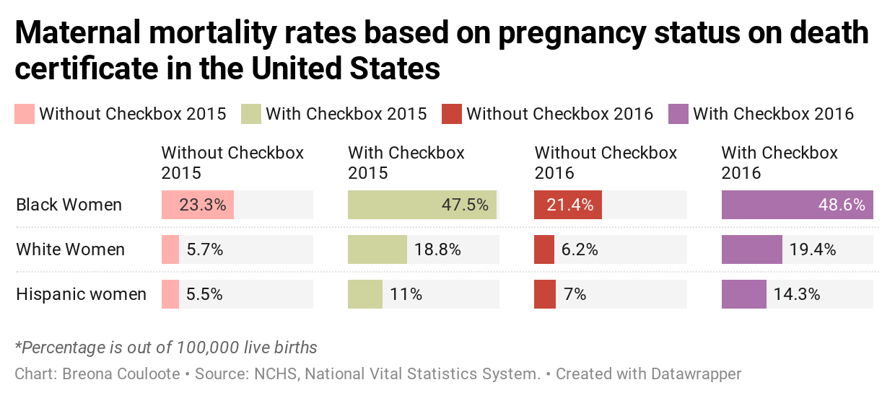

The National Vitals Statistics Report conducted a study to see whether a pregnancy check box on a death certificate would make a difference in maternal mortality rates.
Over the course of 2015 and 2016, researchers discovered that more maternal deaths were reported using the checkbox than without the checkbox at a ratio of 3.07.
The study also showed black women are more likely to die from pregnancy complications compared to white and Hispanic women.
Nicole Jean-Baptiste, doula and co-founder of Bronx (Re) Birth said that some of her black pregnant clients fear dying due to negligence of hospital staff.
“We're seeing that black pregnant women are going into hospital spaces, and they are needing to self-advocate, or at least have someone there who can support them in doing this [giving birth] right,” said Jean-Baptiste.
